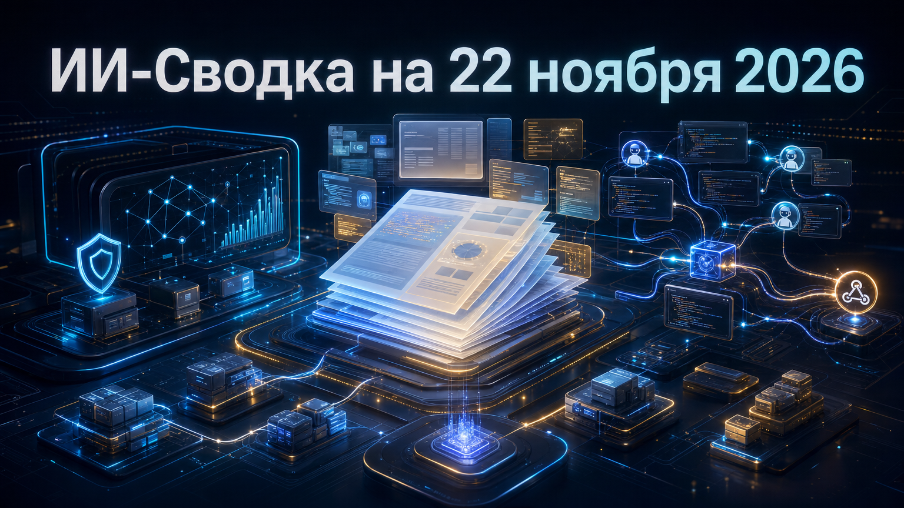

Новостей сегодня меньше, чем обычно
Сегодняшняя повестка сосредоточена на среде, в которой ИИ переходит от одиночного диалога к совместной и управляемой работе. ChatGPT расширяет рабочее пространство на массовый платный тариф, а инструменты для разработки усиливают контроль над агентами, сессиями и корпоративной эксплуатацией.
Практический сигнал для команд: ценность всё чаще создаёт не только модель, но и слой вокруг неё — документы, интеграции, изолированные окружения, наблюдаемость и правила доступа.
OpenAI начала развёртывать ChatGPT Space для подписчиков Plus. По данным Tom's Guide, пространство объединяет страницы, файлы, слайды, сайты и совместную работу внутри ChatGPT; отдельные страницы могут обновляться по расписанию и получать данные из подключённых сервисов.
Официальная страница ChatGPT Space подтверждает доступность функции на Plus, Pro, Business и Enterprise, а также создание интерактивных страниц и автоматизаций. Постоянные агенты Dots остаются функцией более дорогих планов. Для небольших команд это снижает порог входа в общий рабочий контур, но перед подключением внутренних источников данных стоит отдельно проверить права доступа, состав автоматизаций и правила публикации материалов.
В Claude Code 2.1.330 Anthropic добавила вход для организаций, управляемых через Enterprise Admin Console, а также функции для самостоятельных runner-окружений: параметр запуска из заданной директории и команду просмотра метрик. В официальных заметках к релизу также заявлены встроенный мод easel для визуализации и исправления проблем с длительными чатами, WebFetch, worktree и Code Mode.
Это инкрементальное, но прикладное обновление: агентная разработка всё сильнее требует не только генерации кода, но и контроля того, кто входит в среду, где запускаются задачи и как наблюдать за их работой. Новые возможности сами по себе не гарантируют безопасную эксплуатацию: организациям по-прежнему нужны ограниченные права, аудит подключений и отдельные политики для доступа агента к репозиториям и инфраструктуре.
Alibaba Qwen представила Qwen Code 0.28.3. Согласно официальному описанию релиза, инструмент получил GitHub как управляемый channel adapter, send-only Generic Webhook и команду /send для передачи сообщений в другую сессию Web Shell.
Релиз также добавляет экспериментальные Mods в ACP-сессиях, библиотеку артефактов для Managed Agent, режим для screen reader и механизм пропуска моделей, у которых исчерпана доступная ёмкость. Смысл обновления — в переходе от изолированного CLI к связанной среде агентных workflow. Для команд это полезно при координации задач, но каналы, вебхуки и межсессионная связь одновременно расширяют поверхность контроля: их стоит подключать с минимальными разрешениями и понятной регистрацией действий.